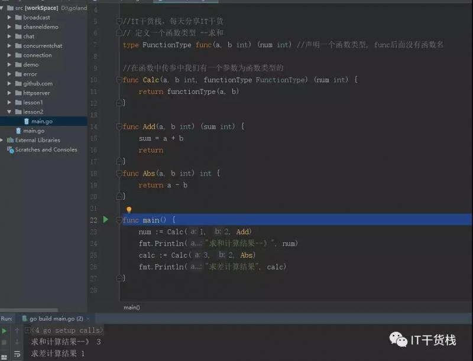
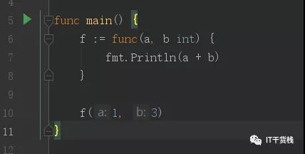
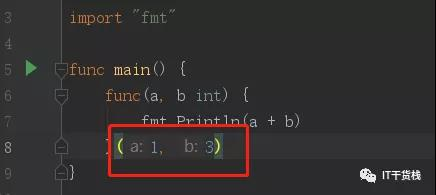
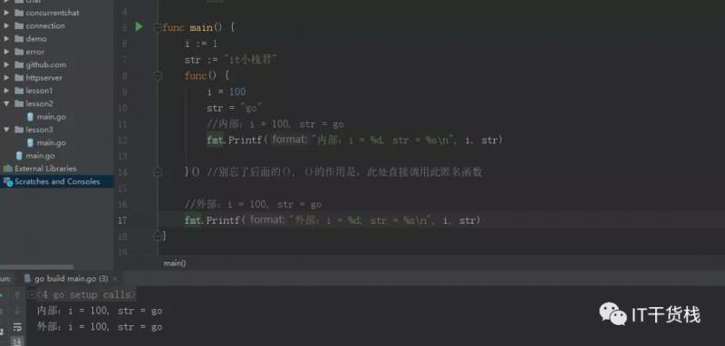
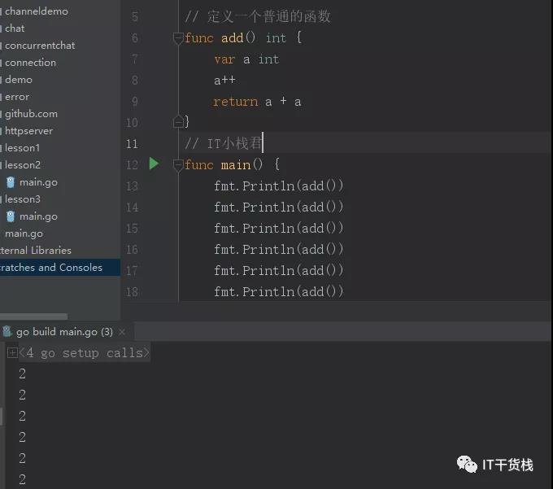
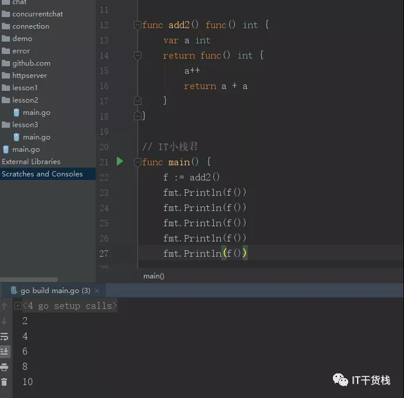

原文连接:https://www.cnblogs.com/it-carry/p/11652451.html
Hello，各位小伙伴大家好，我是小栈君。上一期我们讲到了关于函数的有参、无参、匿名函数，本期我们分享一下关于go语言函数类型、匿名函数和闭包的概念和实战。闲话不多说，立马开始分享。
在Go语言中，函数也是一种数据类型，我们可以通过type来定义它，它的类型就是所有拥有相同的参数，相同的返回值的一种类型。

//IT干货栈，每天分享IT干货
// 定义一个函数类型 --求和
type FunctionType func(a, b int) (num int) //声明一个函数类型, func后面没有函数名
//在函数中传参中我们有一个参数为函数类型的
func Calc(a, b int, functionType FunctionType) (num int) {
return functionType(a, b)
}
func Add(a, b int) (sum int) {
sum = a + b
return
}
func Abs(a, b int) int {
return a - b
}
func main() {
num := Calc(1, 2, Add)
fmt.Println("求和计算结果--》", num)
calc := Calc(3, 2, Abs)
fmt.Println("求差计算结果", calc)
functionType := Add
i := Calc(4, 5, functionType)
fmt.Println(i)
}所以在Go语言中，我们不仅仅使用的是变量，常量，对象等，也是可以使用函数类型进行传参，这个传参是多种多样的。
函数之匿名函数和闭包
匿名函数就是一种不需要定义函数名的函数。在Go语言里，所有的匿名函数(Go语言规范中称之为函数字面量)都是闭包。
匿名函数是指不需要定义函数名的一种函数实现方式，它并不是一个新概念，最早可以回溯到1958年的Lisp语言。其中我们写一个简单的例子

只是将一个匿名函数赋值给一个变量f ,然后进行执行，当然最后的结果就是4啦~
当然关于匿名函数的定义是可以分很多种的。

温馨提示，千万别忘记后面的括号。此处是直接调用匿名函数并进行传参。
所谓闭包就是一个函数“捕获”了和它在同一作用域的其它常量和变量。这就意味着当闭包被调用的时候，不管在程序什么地方调用，闭包能够使用这些常量或者变量。
它不关心这些捕获了的变量和常量是否已经超出了作用域，所以只有闭包还在使用它，这些变量就还会存在。

如图所示，我们可以看到在外部定义了i为1 ，str是“it小栈君”，但是在匿名函数内部我们将变量重新赋值后。内部和外部都成为了100和go了。
所以由此可知函数闭包是以引用的方式捕获外部变量。可能这样说还是太深奥了，那么小栈君这边也是通过几个示例给大家解释一下吧。

我们首先定义了个普通的函数，并没有初始化开始的值，只有当函数被调用的时候才进行值的初始化，分配空间为0。当函数调用完毕后函数值就会被释放。所以我们得到的值就一直是2。
但是如果我们将函数类型设定成返回一个匿名函数，业务逻辑不改变的前提下,如图所示：

如图所示，我们将add2设置成返回一个匿名函数，在匿名函数中有相同的业务逻辑就是a进行自加一后，然后进行相加。
我们通过f来进行调用返回函数，在进行调用闭包函数。之前有句话说的“它不关心这些捕获了的变量和常量是否已经超出了作用域，所以只有闭包还在使用它，这些变量就还会存在。”
只要函数还在调用(f()),那么它就一直存在，然而普通函数调用后就直接释放掉了。对add2的一次调用会生成一个局部变量a并返回一个匿名函数。
每次调用时匿名函数时，该函数都会先使a的值加1，再返回a的和。第二次调用add2时，会生成第二个a变量，并返回一个新的匿名函数。新匿名函数操作的是第二个a变量。
通过这个例子，我们看到变量的生命周期不由它的作用域决定：add2返回后，变量a仍然隐式的存在于f中。
所以各位小伙伴也要尽量掌握关于匿名函数和闭包的概念哦，今天的分享就到这里啦，如果你喜欢我的分享，麻烦你点击收藏、分享或再看。让更多的小伙伴加入我们的学习阵营中来。
这里每天会分享包含java，go，Python，大数据，人工智能的相关干货，我们一起提高，一起进步。我是小栈君，我们明天再见，拜了个拜。
之函数完结篇6.png)
本文由博客一文多发平台 OpenWrite 发布！